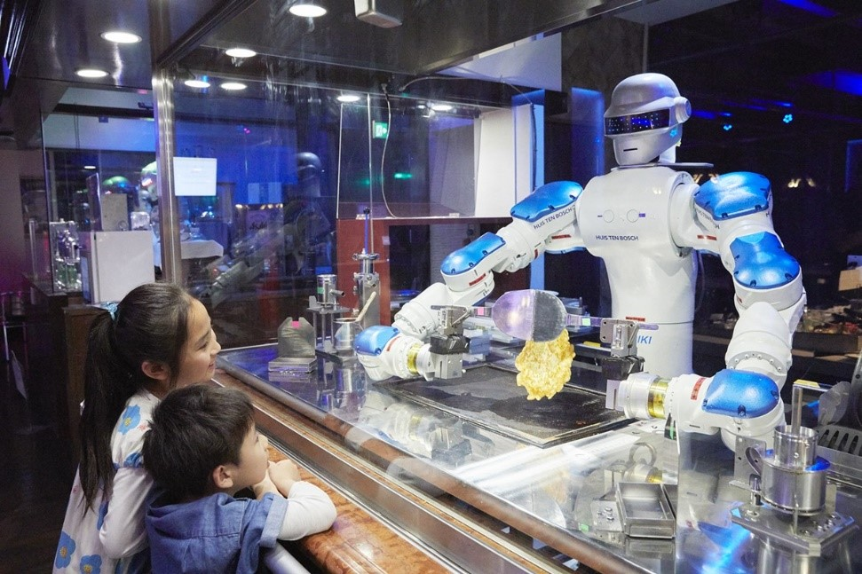
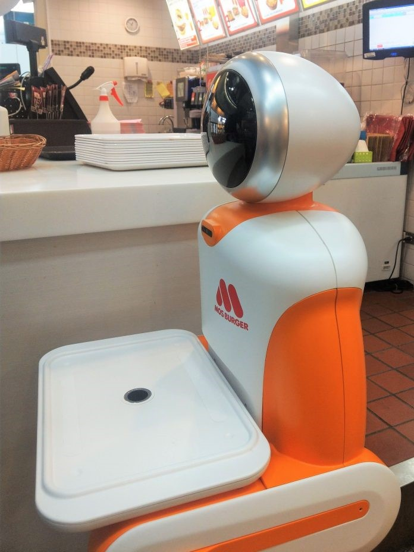

生活 <<
Previous Next >> 衣
食
By林欣鈺50833137
餐飲業屬於勞力密集型的產業，人力成本佔了很高比重，且因為工作內容重複性高、無聊又瑣碎，如能以AI機器人來代替部分人力，確實能有效提高送餐效率，除了提高翻桌率與客戶滿意度之外，還可一併解決人事管理困難與人力成本偏高的問題。
AI機器人配備雷達、深度視覺、空間環境感知、智慧語音辨識等技術，即可做到智慧辨識障礙物與躲避、自動優化送餐路徑、菜品檢測、與顧客互動等功能，且比起人工送餐可大幅提高精準度。
除了在餐廳外場的服務外，也有機器人開始進入到廚房，包括自動存揀食材的機器手臂、烹煮食物的料理機器人也都愈來愈成熟


在科技的進步下.我們的生活越來越方便.隨AI的興起.許多人會面臨失業.AI對人類的發展是好是壞還值得我們去探討一番
資料來源: https://fc.bnext.com.tw/restaurant-ai-robot-food-deliver/
https://images.app.goo.gl/UQEZRWRynP4wfRNS6
生活 <<
Previous Next >> 衣